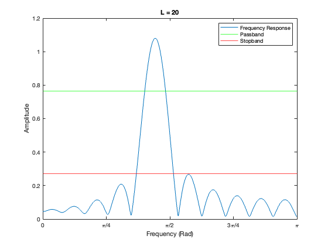
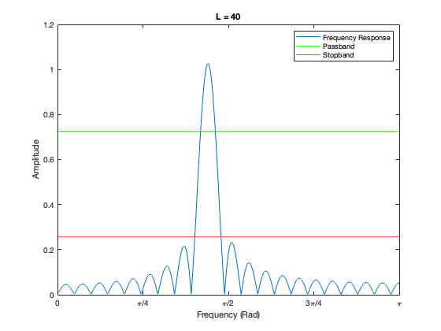

Frequency Response of FIR Filters: Lab P-12: 3 Lab Exercise
Contents
3.1a)
We will cascade these filters by convolution, which will be performed by multiplication of their transfer functions.
First we'll find the transfer function of the general filter
Y(z) = X(z) - 2cos(wn)z^-1X(z) + z^-2X(z)
H(z) = 1 - 2cos(wn)z^-1 + z^-2
Now we'll introduce the nulling frequencies 0.44pi and 0.7pi
H1(z) = 1 - 2cos(0.44pi)z^-1 + z^-2
H2(z) = 1 - 2cos(0.7pi)z^-1 + z^-2
Performing the convolution
(1 - 2cos(0.44pi)z^-1 + z^-2)(1 - 2cos(0.44pi)z^-1 + z^-2)
Yields the fourth order filter
1 + (-2cos(0.7pi) - 2cos(0.44pi)))z^-1 + (2 + 4cos(0.44pi)cos(0.7pi))z^-2 + (-2cos(0.44pi) - 2cos(0.7pi))z^-3 + z^-4
Resulting in the following coefficients
b = [1 -2*cos(0.7*pi)-2*cos(0.44*pi) 2+4*cos(0.44*pi)*cos(0.7*pi) -2*cos(0.44*pi)-2*cos(0.7*pi) 1]
b =
1.0000 0.8008 1.5594 0.8008 1.0000
3.1b)
Generate input signal
n = [0:149]; x = 5*cos(0.3*pi*n) + 22*cos(0.44*pi*n-pi/3) + 22*cos(0.7*pi*n-pi/4);
3.1c)
Pass input through filter
y = conv(b,x);
3.1d)
Plot output signal
plot(0:39, y(1:40)) title('Output') ylabel('y[n]') xlabel('n')
Determine output signal by hand for n >= 5
Taking the inverse z-transform of the transfer function determined in part 3.1a gives the function
y[n] = x[n] + (-2cos(0.7pi) - 2cos(0.44pi))x[n-1] + (2 + 4cos(0.44pi)cos(0.7pi))x[n-2] + (-2cos(0.44pi) - 2cos(0.7pi))x[n-3] + x[n-4]
Passing the input over 5 <= n <= 40 through this function
y_hand = zeros(1,36); for i = 1:36 y_hand(i) = x(i+5) + (-2*cos(0.7*pi) - 2*cos(0.44*pi))*x(i+5-1) + (2 + 4*cos(0.44*pi)*cos(0.7*pi))*x(i+5-2) + (-2*cos(0.44*pi) - 2*cos(0.7*pi))*x(i+5-3) + x(i+5-4); end
3.1e)
Plot convolved output overlayed with hand calculated output
plot(0:39, y(1:40)) hold on stem(0:40, [zeros(1,5) y_hand]) hold off title('Output Comparison') ylabel('y[n]') xlabel('n') legend('convolved', 'hand')
3.1f)
Our input signal is defined for n >= 0 and our filter uses past input values back to x[n-4]. The start-up points at the beginning of the output are the points where those past values of x[n] are undefined by the input function and assummed to be 0. The sinusoidal output seen beginning at n = 5 is when the system can be properly "filled" with past x values. Having 4 start-up values is consistent with cascading two 2nd order filters into a 4th order filter.
clear
3.2a)
Generate bandpass filter with w = 0.44pi
L = 10; wc = 0.44*pi; n = [0:L]; b = 2/L*cos(wc*n);
Measure gain at frequencies of interest using DTFT
gain1 = abs(sum(b.*exp(-1*j*0.3*pi*n))) gain2 = abs(sum(b.*exp(-1*j*0.44*pi*n))) gain3 = abs(sum(b.*exp(-1*j*0.7*pi*n)))
gain1 =
0.3113
gain2 =
1.1161
gain3 =
0.2337
3.2b)
Plot frequency response of the filter when L = 10, 20, 40
for L = [10 20 40]
n = [0:L]; b = 2/L*cos(wc*n); ww = -pi:pi/10000:pi; %The number of samples here has to be quite large to find the passband limits with using a reasonable rounding H_mag = abs(freqz(b,1,ww)); %Frequency response of filter ww = 0:pi/10000:pi; H_mag = H_mag(10001:end); %Looking at positive side of frequency response plot(ww, H_mag) xlim([0 pi]) hold on yline(max(H_mag)*0.707) yline(max(H_mag)*0.25) legend('Frequency Response', 'Passband', 'Stopband') hold off 
Find passband width
passband_limits = find(round(H_mag,2)==round(max(H_mag)*0.707,2)); passband_width = ww(max(passband_limits)) - ww(min(passband_limits))
passband_width =
0.5080
passband_width =
0.2614
passband_width =
0.1357
end
Doubling the parameter L from 10, 20, 40 has halved the passband width from about 0.5, 0.26, 0.135. This verifies the property stated in the lab instructions, that the passband is inversely proportional to L.